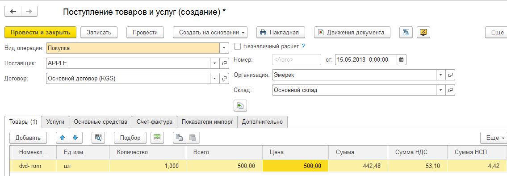
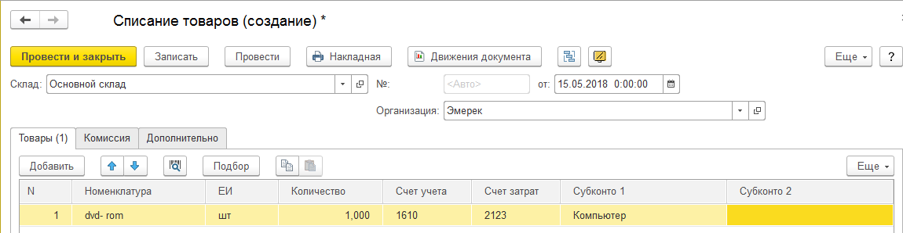
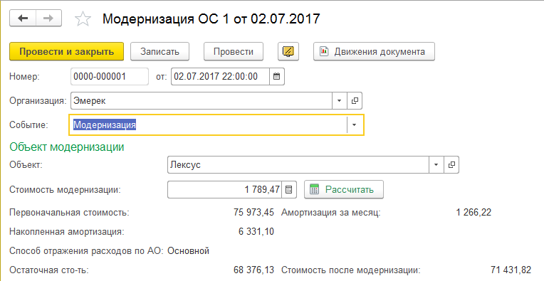
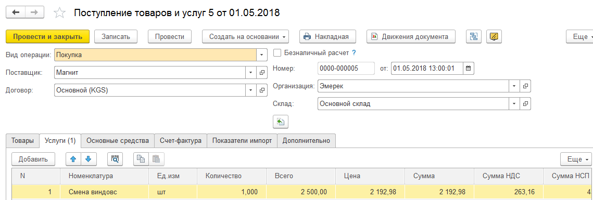
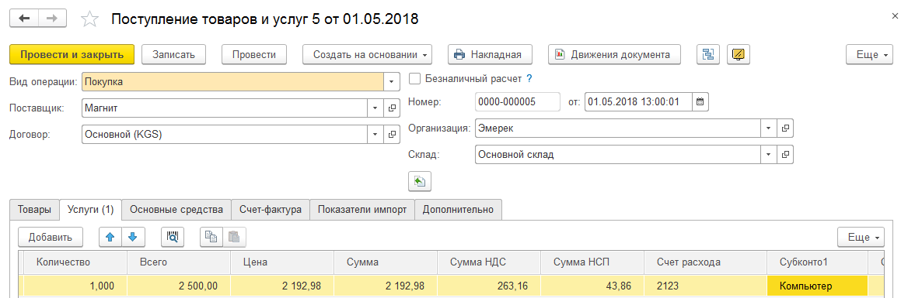
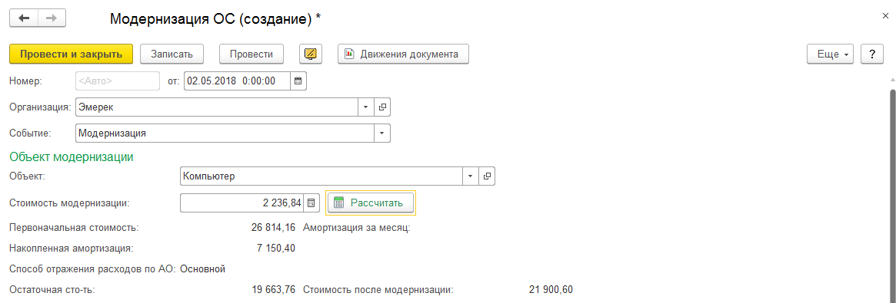

Документ предназначен для оформления:
1. Модернизации или реконструкции (достройки, дооборудования) объектов основных средств. Изменяются его основные параметры. Увеличение первоначальной стоимости основного средства.
При модернизации могут быть изменены параметры учета основных средств, например, увеличен срок эксплуатации основного средства, а также установлены новые параметры для расчета амортизации.
2. Событие Изменение параметров предназначено для изменения сведений об объектах основных средств, которые влияют на расчет амортизации. Такими сведения могут быть: срок службы, стоимость объекта, объем продукции при использовании производственного метода и т.д.
В шапке документа необходимо заполнить реквизиты:
• Организация
• Событие: Модернизация или изменение параметров
Событие Модернизация можно оформить двумя способами:
Первый способ.
1.Оформить документ Поступление товаров и услуг (панель разделов Покупка и продажа) по кнопке Создать.
2.На закладке Товары оформить покупку товаров.

3.Оформить документ Списание товаров по кнопке Создать (панель разделов Запасы - Списание товаров)
4. Заполнить табличную часть Товары, выбрать из справочника номенклатуру, приобретенную для увеличения стоимости ОС

5.Оформить документ Модернизация ОС по кнопке Создать.

6.В поле Событие указать Модернизация
7.Заполнить необходимые поля:
• Объект модернизации в поле Объект.
• Нажать кнопку Рассчитать. В поле Стоимость модернизации заполнится сумма по документам Оприходования, в которых указана аналитика основных средств
• Первоначальная стоимость - стоимость по документу поступления
• Амортизация за месяц - если в учетной политике установлен флажок расчет амортизации по месяцам, то начисляется амортизация за месяц по первоначальной стоимости на начало месяца.
Если в учетной политике не установлен флажок. Амортизация за дни месяца до модернизации начисляется документом Закрытие месяца по первоначальной стоимости на начало месяца.
• Накопленная амортизация - сумма износа, накопленная на дату оформления документа
• Остаточная стоимость = Первоначальная стоимость – амортизация за месяц
• Стоимость после модернизации = Первоначальная стоимость + стоимость модернизации- Накопленная амортизация
• Накопленная амортизация после модернизации = Накопленная амортизация\нач + Амортизация за месяц\нач;
• База амортизации - для расчета бухгалтерской амортизации.
При установленном флажке Расчет амортизации от базы АО (Настройки – Параметры учета – Основные средства) ПС – ЛС - НА;
При сброшенном флажке База амортизации = ПС - ЛС
Второй способ.
1. Добавить новый документ Поступление товаров и услуг по кнопке Создать (панель разделов Покупка и продажа – Поступление товаров и услуг).
2. На закладке Услуги оформить полученную услугу.

3. В поле Счет затрат указать счет модернизации ОС.
4. В поле Субконто затрат установить то ОС, стоимость которого необходимо увеличить.

5. Оформить документ Модернизация ОС по кнопке Создать.

6.В поле Событие указать Модернизация
7.Заполнить необходимые поля:
• Объект модернизации в поле Объект.
• Нажать кнопку Рассчитать. В поле Стоимость модернизации заполнится сумма по документам Оприходования, в которых указана аналитика основных средств
• Первоначальная стоимость - стоимость по документу поступления
• Амортизация за месяц, накопленная амортизация - если в учетной политике установлен флажок расчет амортизации по месяцам, то начисляется амортизация за месяц по первоначальной стоимости на начало месяца.
Если в учетной политике не установлен флажок. Амортизация за дни месяца до модернизации начисляется документом Закрытие месяца по первоначальной стоимости на начало месяца.
• Остаточная стоимость = ПС - НА - амортизация за месяц
ПС - первоначальная стоимость
НА - накопленная амортизация
На закладке Дополнительно указывается счет учета модернизации 2123 или счет учета 2121 Незавершенное строительство.
Одновременно с увеличением первоначальной стоимости могут измениться и другие параметры ОС.
Событие Изменение параметров предназначено для изменения сведений обо объектов основных средств, которые влияют на расчет амортизации.
Такими сведениями могут быть:
• Срок службы
• Инвентарный номер
• Способ отражения расходов по амортизации
• Счет учета
• Ликвидационная стоимость
• Способ начисления амортизации
• Группа НУ
Как найти: ОС и НМА → Основные средства → Модернизация ОС